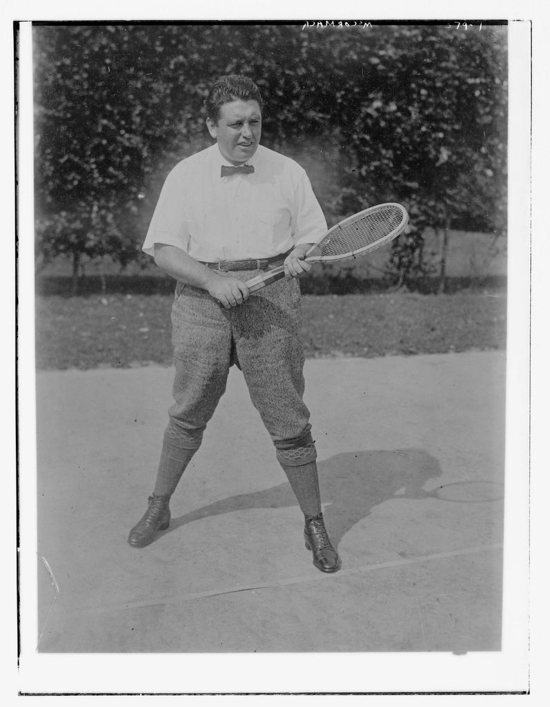
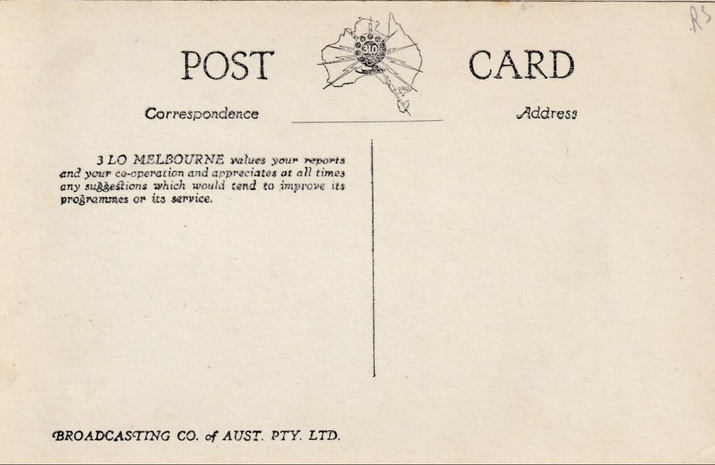

🎬 ESA-Sonde Hera sendet erste Bilder von Asteroid Dimorphos
🎬 ESA-Sonde Hera sendet erste Bilder von Asteroid Dimorphos 🎬 巨大な爆発がバンコク油デポに当たる
🎬 巨大な爆発がバンコク油デポに当たる 🎬 年金は45年の貢献の後で: 新しいCDU提案とは
🎬 年金は45年の貢献の後で: 新しいCDU提案とは 売春：議員らが売春法の改革を要求Prostitution: Abgeordnete fordern Reform des ProstitutionsrechtsCDUは性的サービスの購入に対する罰則を求め、緑の党は性購入の禁止に反対している。これに先立ち、専門家委員会が改革案を提
売春：議員らが売春法の改革を要求Prostitution: Abgeordnete fordern Reform des ProstitutionsrechtsCDUは性的サービスの購入に対する罰則を求め、緑の党は性購入の禁止に反対している。これに先立ち、専門家委員会が改革案を提 米国：軍がオハイオ州の弾薬工場でアジ化鉛4トンを爆破処理USA: Armee sprengt vier Tonnen Bleiazid in Ohio-Munitionsfabrikオハイオ州の弾薬工場の敷地内で、有毒な起爆薬の入った数十本の樽が制御不能な爆発を起こす恐れがあった。これに先んじて、
米国：軍がオハイオ州の弾薬工場でアジ化鉛4トンを爆破処理USA: Armee sprengt vier Tonnen Bleiazid in Ohio-Munitionsfabrikオハイオ州の弾薬工場の敷地内で、有毒な起爆薬の入った数十本の樽が制御不能な爆発を起こす恐れがあった。これに先んじて、 ジャマル・ムシアラの問題：ヨシュア・キミッヒ、バイエルン首脳陣の振る舞いを非難Fall Jamal Musiala: Joshua Kimmich verurteilt Verhalten der Bayern-Grandenこのインタビューは、ミュンヘンの雰囲気について多くを物語っている。ヨシュア・キミッヒは極めて明確な口調で、体調を崩しているジャ…に対するバイエルン首脳陣の対応を…
ジャマル・ムシアラの問題：ヨシュア・キミッヒ、バイエルン首脳陣の振る舞いを非難Fall Jamal Musiala: Joshua Kimmich verurteilt Verhalten der Bayern-Grandenこのインタビューは、ミュンヘンの雰囲気について多くを物語っている。ヨシュア・キミッヒは極めて明確な口調で、体調を崩しているジャ…に対するバイエルン首脳陣の対応を… プロジェクト「スターマインド」：SpaceX、AIデータセンター用衛星を宇宙へ送ることが可能にProjekt Starmind: SpaceX darf Satelliten für KI-Rechenzentren ins All schicken米国はSpaceXにAIデータセンター用衛星100万基の打ち上げを許可した。プロジェクト「スターマインド」の最初の衛星は2027年末に宇宙へ飛ぶ予定だ。
プロジェクト「スターマインド」：SpaceX、AIデータセンター用衛星を宇宙へ送ることが可能にProjekt Starmind: SpaceX darf Satelliten für KI-Rechenzentren ins All schicken米国はSpaceXにAIデータセンター用衛星100万基の打ち上げを許可した。プロジェクト「スターマインド」の最初の衛星は2027年末に宇宙へ飛ぶ予定だ。 ムシアラをめぐる論争 ― キミッヒがバイエルン首脳陣を批判Debatte um Musiala - Kimmich greift Bayern-Bosse anFCバイエルンの首脳陣がジャマル・ムシアラをめぐる論争を引き起こし、ヨシュア・キミッヒはそれについて理解できないと表明した。
ムシアラをめぐる論争 ― キミッヒがバイエルン首脳陣を批判Debatte um Musiala - Kimmich greift Bayern-Bosse anFCバイエルンの首脳陣がジャマル・ムシアラをめぐる論争を引き起こし、ヨシュア・キミッヒはそれについて理解できないと表明した。 チャンピオンズリーグ：FCバイエルン・ミュンヘン、リールでリードしながら敗北Champions League: FC Bayern München verliert nach Führung in Lilleバイエルンはチャンピオンズリーグでつまずき、ヴァンサン・コンパニはすでに「モメンタム」をめぐる戦いを宣言している。OSCリール側ではムバッペ（弟）、Anc
チャンピオンズリーグ：FCバイエルン・ミュンヘン、リールでリードしながら敗北Champions League: FC Bayern München verliert nach Führung in Lilleバイエルンはチャンピオンズリーグでつまずき、ヴァンサン・コンパニはすでに「モメンタム」をめぐる戦いを宣言している。OSCリール側ではムバッペ（弟）、Anc デュラン・デュランのギタリスト、アンディ・テイラーが65歳で死去Duran Duran guitarist Andy Taylor dies at 65同バンドは1980年代に「Girls on Film」や「Hungry Like The Wolf」など数多くのヒット曲を生んだ。
デュラン・デュランのギタリスト、アンディ・テイラーが65歳で死去Duran Duran guitarist Andy Taylor dies at 65同バンドは1980年代に「Girls on Film」や「Hungry Like The Wolf」など数多くのヒット曲を生んだ。 デュラン・デュランのギタリスト、アンディ・テイラー氏が65歳で死去Duran Duran guitarist Andy Taylor dies at 65アンディ・テイラーさんは、デュラン・デュランがロックンロールの殿堂入りした2022年に、がんと闘っていることを初めて明かした。同バンドは1980年代に数多くのヒット曲を生み出した
デュラン・デュランのギタリスト、アンディ・テイラー氏が65歳で死去Duran Duran guitarist Andy Taylor dies at 65アンディ・テイラーさんは、デュラン・デュランがロックンロールの殿堂入りした2022年に、がんと闘っていることを初めて明かした。同バンドは1980年代に数多くのヒット曲を生み出した チャンピオンズリーグ第5節：バイエルンはオウンゴールで敗れ、ミランはシュトゥットガルトに勝利Champions League, 5. Spieltag: Bayern verliert durch Eigentor, Mailand gewinnt gegen Stuttgartパヴロヴィッチのオウンゴールにより、リールが負傷者に苦しむミュンヘンのチームに勝利した。VfBシュトゥットガルトはイタリア王者に敗れた。試合は
チャンピオンズリーグ第5節：バイエルンはオウンゴールで敗れ、ミランはシュトゥットガルトに勝利Champions League, 5. Spieltag: Bayern verliert durch Eigentor, Mailand gewinnt gegen Stuttgartパヴロヴィッチのオウンゴールにより、リールが負傷者に苦しむミュンヘンのチームに勝利した。VfBシュトゥットガルトはイタリア王者に敗れた。試合は ニューヨーク：嵐の警報で感謝祭パレードが延期New York: Sturmwarnung verschiebt Thanksgiving-Paradeニューヨークの有名な感謝祭パレードは今年、予定通り木曜日には開催されない。激しい嵐の警報のため、パレードは土曜日に延期される
ニューヨーク：嵐の警報で感謝祭パレードが延期New York: Sturmwarnung verschiebt Thanksgiving-Paradeニューヨークの有名な感謝祭パレードは今年、予定通り木曜日には開催されない。激しい嵐の警報のため、パレードは土曜日に延期される チャンピオンズリーグ：ヴィルツが再び得点、リヴァプールがブルッヘで勝利Champions League: Wirtz trifft erneut, Liverpool gewinnt in BrüggeリヴァプールFCはチャンピオンズリーグでクラブ・ブルッヘ相手に敵地で快勝した。フロリアン・ヴィルツはその試合でも再び見事なゴールを決めた。
チャンピオンズリーグ：ヴィルツが再び得点、リヴァプールがブルッヘで勝利Champions League: Wirtz trifft erneut, Liverpool gewinnt in BrüggeリヴァプールFCはチャンピオンズリーグでクラブ・ブルッヘ相手に敵地で快勝した。フロリアン・ヴィルツはその試合でも再び見事なゴールを決めた。 チャンピオンズリーグ：フロリアン・ヴィルツが再び得点、シュトゥットガルトはミラノで敗れるChampions League: Florian Wirtz trifft schon wieder, Stuttgart scheitert in Mailand代表チームでは好調で、今ではリバプールFCでもますます好調になっている。フロリアン・ヴィルツが調子を取り戻している。VfBシュトゥットガルトは困難な…
チャンピオンズリーグ：フロリアン・ヴィルツが再び得点、シュトゥットガルトはミラノで敗れるChampions League: Florian Wirtz trifft schon wieder, Stuttgart scheitert in Mailand代表チームでは好調で、今ではリバプールFCでもますます好調になっている。フロリアン・ヴィルツが調子を取り戻している。VfBシュトゥットガルトは困難な… チャンピオンズリーグ：インテル・ミラノがVfBシュトゥットガルトを寄せ付けずChampions League: Inter Mailand kocht den VfB Stuttgart abまずまずの出来にもかかわらず、VfBシュトゥットガルトはチャンピオンズリーグでまた敗北を喫し、再び無得点に終わった。
チャンピオンズリーグ：インテル・ミラノがVfBシュトゥットガルトを寄せ付けずChampions League: Inter Mailand kocht den VfB Stuttgart abまずまずの出来にもかかわらず、VfBシュトゥットガルトはチャンピオンズリーグでまた敗北を喫し、再び無得点に終わった。 チャンピオンズリーグ：バイエルン、リールで勝利をふいにするChampions League: Bayern verstolpern Sieg in Lilleバイエルン・ミュンヘンはチャンピオンズリーグで、順位表の下から2番目のOSCリールに敗れた。同時に、ジャマル・ムシアラの将来をめぐる議論がさらに熱を帯びた。
チャンピオンズリーグ：バイエルン、リールで勝利をふいにするChampions League: Bayern verstolpern Sieg in Lilleバイエルン・ミュンヘンはチャンピオンズリーグで、順位表の下から2番目のOSCリールに敗れた。同時に、ジャマル・ムシアラの将来をめぐる議論がさらに熱を帯びた。 エジプト：高速道路で燃料トラックが横転、少なくとも31人が死亡Egypt: At least 31 dead after fuel truck overturns on highway事故はカイロ近郊のギーザにある混雑した環状道路で発生した。数十台の救急車が事故現場に出動しており、エジプトの保健当局は死…
エジプト：高速道路で燃料トラックが横転、少なくとも31人が死亡Egypt: At least 31 dead after fuel truck overturns on highway事故はカイロ近郊のギーザにある混雑した環状道路で発生した。数十台の救急車が事故現場に出動しており、エジプトの保健当局は死… 63歳からの年金：CDU、低所得者向けに減額なしの年金を提案Rente mit 63: CDU schlägt abschlagsfreie Rente für Bezieher geringer Einkommen vor連合は年金論争でSPDに歩み寄っている。提案によると、平均以下の所得の人々については、45年の拠出期間後の年金が…
63歳からの年金：CDU、低所得者向けに減額なしの年金を提案Rente mit 63: CDU schlägt abschlagsfreie Rente für Bezieher geringer Einkommen vor連合は年金論争でSPDに歩み寄っている。提案によると、平均以下の所得の人々については、45年の拠出期間後の年金が… 消防出動：バスが炎上―破裂音に住民が驚くFeuerwehreinsatz: Busse in Flammen - Knallgeräusche schrecken Anwohner auf
消防出動：バスが炎上―破裂音に住民が驚くFeuerwehreinsatz: Busse in Flammen - Knallgeräusche schrecken Anwohner auf 緊急事態：ドルトムントで爆弾を処理Notfälle: Bombe in Dortmund entschärft
緊急事態：ドルトムントで爆弾を処理Notfälle: Bombe in Dortmund entschärft ESAの探査機ヘラ：ESAが小惑星防衛ミッションの壮観な画像を公開ESA-Sonde Hera: ESA veröffentlicht spektakuläre Bilder von Asteroiden-Abwehrmission4年前、米国の探査機が小惑星ディモルフォスに意図的に衝突させられた。欧州ミッションの画像が今、衝突の影響を示している。
ESAの探査機ヘラ：ESAが小惑星防衛ミッションの壮観な画像を公開ESA-Sonde Hera: ESA veröffentlicht spektakuläre Bilder von Asteroiden-Abwehrmission4年前、米国の探査機が小惑星ディモルフォスに意図的に衝突させられた。欧州ミッションの画像が今、衝突の影響を示している。 ベルリンでの政権樹立：フランツィスカ・ギファイ氏、ヴァネッサ・エムデ氏の除名だけでは左派との解決にならないとみるRegierungsbildung in Berlin: Franziska Giffey sieht mit Ausschluss von Vanessa Emde keine Lösung mit Linken論争を呼んでいるベルリン選出議員ヴァネッサ・エムデ氏は、もはや左派会派に所属していない。フランツィスカ・ギファイ氏にとっては「象徴的な一歩」だが、それだけでは不十分だ…
ベルリンでの政権樹立：フランツィスカ・ギファイ氏、ヴァネッサ・エムデ氏の除名だけでは左派との解決にならないとみるRegierungsbildung in Berlin: Franziska Giffey sieht mit Ausschluss von Vanessa Emde keine Lösung mit Linken論争を呼んでいるベルリン選出議員ヴァネッサ・エムデ氏は、もはや左派会派に所属していない。フランツィスカ・ギファイ氏にとっては「象徴的な一歩」だが、それだけでは不十分だ… フリーダ・ゴールド：フロントウーマンのアリーナ・ズッゲラー、脳出血の際に「死を覚悟した」Frida Gold: Frontfrau Alina Süggeler stellte sich bei Hirnblutung »auf Sterben ein«彼女の体は「死ぬ準備をしていた」という。歌手アリーナ・ズッゲラーは4月に脳出血を公表した。その経験は彼女に恐怖を与えたが、その後…
フリーダ・ゴールド：フロントウーマンのアリーナ・ズッゲラー、脳出血の際に「死を覚悟した」Frida Gold: Frontfrau Alina Süggeler stellte sich bei Hirnblutung »auf Sterben ein«彼女の体は「死ぬ準備をしていた」という。歌手アリーナ・ズッゲラーは4月に脳出血を公表した。その経験は彼女に恐怖を与えたが、その後… エジプト：ギザの高速道路で大規模火災、少なくとも30人死亡Ägypten: Mindestens 30 Tote bei Großbrand auf Autobahn in Gizehガスボンベを積んだトラックが、エジプトの都市ギザの高速道路で事故を起こし、大規模火災を引き起こした。少なくとも30人が死亡した…
エジプト：ギザの高速道路で大規模火災、少なくとも30人死亡Ägypten: Mindestens 30 Tote bei Großbrand auf Autobahn in Gizehガスボンベを積んだトラックが、エジプトの都市ギザの高速道路で事故を起こし、大規模火災を引き起こした。少なくとも30人が死亡した… エヌビディア、暗号資産事業をめぐる訴訟で数百万の和解Nvidia: Millionenvergleich nach Klagen wegen Kryptogeschäft投資家たちは長年、暗号資産事業に関する誤解を招く表示があったとして、半導体大手エヌビディアを訴えてきた。今回、数百万の支払いにより訴訟が…
エヌビディア、暗号資産事業をめぐる訴訟で数百万の和解Nvidia: Millionenvergleich nach Klagen wegen Kryptogeschäft投資家たちは長年、暗号資産事業に関する誤解を招く表示があったとして、半導体大手エヌビディアを訴えてきた。今回、数百万の支払いにより訴訟が… 自治体：シュトラウビング市庁舎が再び交流の場にKommunen: Straubinger Rathaus ist wieder ein Ort der Begegnung
自治体：シュトラウビング市庁舎が再び交流の場にKommunen: Straubinger Rathaus ist wieder ein Ort der Begegnung ベルリンでの抗議：左派党が連邦議会での元モサド長官とのイベントを妨害Protest in Berlin: Linke blockieren Veranstaltung mit Ex-Mossad-Chef im Bundestag左派党所属の連邦議会議員2人が、ダビド・バルネア氏との会合へのアクセスを一時的に遮断した。今、この件については長老会議が…
ベルリンでの抗議：左派党が連邦議会での元モサド長官とのイベントを妨害Protest in Berlin: Linke blockieren Veranstaltung mit Ex-Mossad-Chef im Bundestag左派党所属の連邦議会議員2人が、ダビド・バルネア氏との会合へのアクセスを一時的に遮断した。今、この件については長老会議が… デジタル：マイクロソフト障害の後、オット氏がベンダー依存に警告Digitales: Nach Microsoft-Ausfall: Ott warnt vor Anbieter-Abhängigkeit
デジタル：マイクロソフト障害の後、オット氏がベンダー依存に警告Digitales: Nach Microsoft-Ausfall: Ott warnt vor Anbieter-Abhängigkeit 「63歳年金」をめぐる対立：連合の議員らが「レスペクト年金」を提案Streit um "Rente mit 63": Unionsabgeordnete schlagen "Respekt-Rente" vor「63歳年金」をめぐる対立で、連合の議員らはSPDに妥協案を提示している。彼らは「レスペクト年金」を提案している。低所得の人々のために
「63歳年金」をめぐる対立：連合の議員らが「レスペクト年金」を提案Streit um "Rente mit 63": Unionsabgeordnete schlagen "Respekt-Rente" vor「63歳年金」をめぐる対立で、連合の議員らはSPDに妥協案を提示している。彼らは「レスペクト年金」を提案している。低所得の人々のために 欧州委員会、香水カルテルに4億7000万ユーロの罰金EU-Kommission: 470-Millionen-Euro-Strafe gegen Parfümkartell世界最大級の香料メーカー3社が、長年にわたり価格とコストについて申し合わせていたとされる。そのため欧州委員会は罰金を科す…
欧州委員会、香水カルテルに4億7000万ユーロの罰金EU-Kommission: 470-Millionen-Euro-Strafe gegen Parfümkartell世界最大級の香料メーカー3社が、長年にわたり価格とコストについて申し合わせていたとされる。そのため欧州委員会は罰金を科す… ミス・ユニバース：プエルトリコ出身のジェニファー・バレット氏が優勝Miss Universe: Jennifer Barreto aus Puerto Rico gewinnt Wettbewerb彼女は母親であり、米国防総省で働いていた。ジェニファー・バレット氏は世界で最も有名なミスコンテストで優勝した。
ミス・ユニバース：プエルトリコ出身のジェニファー・バレット氏が優勝Miss Universe: Jennifer Barreto aus Puerto Rico gewinnt Wettbewerb彼女は母親であり、米国防総省で働いていた。ジェニファー・バレット氏は世界で最も有名なミスコンテストで優勝した。 ロシア：「プーチンはスターリンのように戦争はできない」 ゼンケ・ナイツェル氏とハンナ・ノッテ氏がシュピーゲル・トークで語るRussland: »Putin kann keinen Krieg führen wie Stalin« Sönke Neitzel und Hanna Notte im SPIEGEL-Talkプーチンはどこまでエスカレートするのか。ここではロシア専門家のハンナ・ノッテ氏と軍事史家のゼンケ・ナイツェル氏が、ポーランドへのミサイルや交渉の時間的余地について語る
ロシア：「プーチンはスターリンのように戦争はできない」 ゼンケ・ナイツェル氏とハンナ・ノッテ氏がシュピーゲル・トークで語るRussland: »Putin kann keinen Krieg führen wie Stalin« Sönke Neitzel und Hanna Notte im SPIEGEL-Talkプーチンはどこまでエスカレートするのか。ここではロシア専門家のハンナ・ノッテ氏と軍事史家のゼンケ・ナイツェル氏が、ポーランドへのミサイルや交渉の時間的余地について語る チャンピオンズリーグ：コンパニ監督がムシアラについて語る：「完全な集中」Champions League: Kompany über Musiala: «Totaler Fokus»
チャンピオンズリーグ：コンパニ監督がムシアラについて語る：「完全な集中」Champions League: Kompany über Musiala: «Totaler Fokus» ナイジェリア、メキシコ人5人を拘束、2億2000万ドル超の覚醒剤を押収Nigeria detains 5 Mexicans, confiscates over $220 million of methナイジェリアの麻薬取締機関は、メキシコ人の専門家らがナイジェリア人によって雇われ、南東部エヌグ州で覚醒剤製造所を運営していた疑いがあると述べた。
ナイジェリア、メキシコ人5人を拘束、2億2000万ドル超の覚醒剤を押収Nigeria detains 5 Mexicans, confiscates over $220 million of methナイジェリアの麻薬取締機関は、メキシコ人の専門家らがナイジェリア人によって雇われ、南東部エヌグ州で覚醒剤製造所を運営していた疑いがあると述べた。 バレーボールカップ：ベルリン・ボレーズ、DVVカップ準決勝へ堂々と進出Volleyball-Pokal: Berlin Volleys erreichen souverän Halbfinale im DVV-Pokal
バレーボールカップ：ベルリン・ボレーズ、DVVカップ準決勝へ堂々と進出Volleyball-Pokal: Berlin Volleys erreichen souverän Halbfinale im DVV-Pokal 米国のはしか流行：米国は2026年に6,000件を超えるはしか感染を記録Masern-Ausbruch in den USA: USA zählen 2026 mehr als 6.000 Maserninfektionen先週以降、米国は公式にはしかのない国とはみなされなくなった。感染者数の増加に伴い、死者数も増えている。
米国のはしか流行：米国は2026年に6,000件を超えるはしか感染を記録Masern-Ausbruch in den USA: USA zählen 2026 mehr als 6.000 Maserninfektionen先週以降、米国は公式にはしかのない国とはみなされなくなった。感染者数の増加に伴い、死者数も増えている。 2027年度予算：記録的な債務が連立内の対立を激化させるHaushalt 2027: Rekordschulden verschärfen den Streit in der Koalition連邦予算は過去最高水準に達しており、年金財政、防衛、景気低迷が圧力を高めている。同時に緊張が高まり…
2027年度予算：記録的な債務が連立内の対立を激化させるHaushalt 2027: Rekordschulden verschärfen den Streit in der Koalition連邦予算は過去最高水準に達しており、年金財政、防衛、景気低迷が圧力を高めている。同時に緊張が高まり… チャンピオンズリーグ：好調のアデイェミ、バルセロナがバクーで当然の勝利を収めるChampions League: Starker Adeyemi: Barcelona erledigt Pflichtaufgabe in Baku
チャンピオンズリーグ：好調のアデイェミ、バルセロナがバクーで当然の勝利を収めるChampions League: Starker Adeyemi: Barcelona erledigt Pflichtaufgabe in Baku シュヴァインフルト：女子生徒が数か月にわたり虐待される――容疑者7人Schweinfurt: Schülerin über Monate missbraucht – sieben Tatverdächtige暴行は数か月に及んだ。13歳の少女への虐待に10代の若者7人が関与したとみられる。家宅捜索で警察は証拠品を押収した。
シュヴァインフルト：女子生徒が数か月にわたり虐待される――容疑者7人Schweinfurt: Schülerin über Monate missbraucht – sieben Tatverdächtige暴行は数か月に及んだ。13歳の少女への虐待に10代の若者7人が関与したとみられる。家宅捜索で警察は証拠品を押収した。 チャンピオンズリーグ：バルセロナ、アゼルバイジャンで当然の勝利を収めるChampions League: Barcelona holt Pflichtsieg in AserbaidschanFCバルセロナはチャンピオンズリーグで、アゼルバイジャンのFKサバフに快勝した。
チャンピオンズリーグ：バルセロナ、アゼルバイジャンで当然の勝利を収めるChampions League: Barcelona holt Pflichtsieg in AserbaidschanFCバルセロナはチャンピオンズリーグで、アゼルバイジャンのFKサバフに快勝した。 マイクロソフト：同社、世界的なIT障害に「コード・レッド」で対応Microsoft: Konzern reagiert mit »Code Red« auf globale IT-Störung世界的なIT障害により、マイクロソフトは警戒態勢に入った。同社は社内で最高の危機レベルを発令し、緊急時手順を見直す計画を立てている
マイクロソフト：同社、世界的なIT障害に「コード・レッド」で対応Microsoft: Konzern reagiert mit »Code Red« auf globale IT-Störung世界的なIT障害により、マイクロソフトは警戒態勢に入った。同社は社内で最高の危機レベルを発令し、緊急時手順を見直す計画を立てている ネタニヤフ氏に対する収賄の告発が取り下げられる可能性Bestechungsvorwurf gegen Netanjahu könnte fallen gelassen werdenイスラエルの首相は長年にわたり、詐欺、背任、収賄の罪で法廷で責任を問われてきた。裁判官らはこのほど、最後の起訴項目を
ネタニヤフ氏に対する収賄の告発が取り下げられる可能性Bestechungsvorwurf gegen Netanjahu könnte fallen gelassen werdenイスラエルの首相は長年にわたり、詐欺、背任、収賄の罪で法廷で責任を問われてきた。裁判官らはこのほど、最後の起訴項目を 2026年11月25日の『Wirtschaft vor acht』Wirtschaft vor acht vom 25.11.20262026年11月25日の『Wirtschaft vor acht』
2026年11月25日の『Wirtschaft vor acht』Wirtschaft vor acht vom 25.11.20262026年11月25日の『Wirtschaft vor acht』 ガスボンベが爆発：エジプトのトンネル上部での火災で30人死亡Gasflaschen explodierten: 30 Tote nach Brand oberhalb eines Tunnels in Ägypten
ガスボンベが爆発：エジプトのトンネル上部での火災で30人死亡Gasflaschen explodierten: 30 Tote nach Brand oberhalb eines Tunnels in Ägypten AIアシスタンス：Metaの従業員がAIエージェント「Muse」に恐怖を感じる理由KI-Assistenz: Wie Metas Mitarbeiter sich vorm KI-Agenten Muse gruselnMetaのAIアシスタント「Muse」には数百万人のユーザーとふわふわしたマスコットがいるが、問題もある。従業員たちは、そのボットが読むべきではないメッセンジャーのメッセージを読んでいると訴えている
AIアシスタンス：Metaの従業員がAIエージェント「Muse」に恐怖を感じる理由KI-Assistenz: Wie Metas Mitarbeiter sich vorm KI-Agenten Muse gruselnMetaのAIアシスタント「Muse」には数百万人のユーザーとふわふわしたマスコットがいるが、問題もある。従業員たちは、そのボットが読むべきではないメッセンジャーのメッセージを読んでいると訴えている 右翼テロ：連邦検察庁、右翼テロの疑いがある者らを逮捕Rechtsterrorismus: Bundesanwaltschaft lässt mutmaßliche Rechtsterroristen festnehmen10代の若者3人が、極右テロ組織に所属している疑いで逮捕された。彼らは外国人を標的とすることを計画していたとされる。
右翼テロ：連邦検察庁、右翼テロの疑いがある者らを逮捕Rechtsterrorismus: Bundesanwaltschaft lässt mutmaßliche Rechtsterroristen festnehmen10代の若者3人が、極右テロ組織に所属している疑いで逮捕された。彼らは外国人を標的とすることを計画していたとされる。 陳吉寧：恐怖が習近平の権力機構の潤滑油となるChen Jining: Die Angst schmiert Xi Jinpings Machtmaschine陳吉寧氏は共産党の新星の一人と見なされていた。ところが今、習近平氏は理由不明のまま、上海市党委員会書記の彼のキャリアを
陳吉寧：恐怖が習近平の権力機構の潤滑油となるChen Jining: Die Angst schmiert Xi Jinpings Machtmaschine陳吉寧氏は共産党の新星の一人と見なされていた。ところが今、習近平氏は理由不明のまま、上海市党委員会書記の彼のキャリアを イスタンブールで女性に対する暴力への抗議が禁止されるProteste gegen Gewalt an Frauen in Istanbul verboten女性の権利団体はイスタンブールで女性に対する暴力に抗議するデモを行おうとした。しかし、デモの呼びかけの後、抗議は禁止された。それでも夕方には
イスタンブールで女性に対する暴力への抗議が禁止されるProteste gegen Gewalt an Frauen in Istanbul verboten女性の権利団体はイスタンブールで女性に対する暴力に抗議するデモを行おうとした。しかし、デモの呼びかけの後、抗議は禁止された。それでも夕方には 米国の関税：ドナルド・トランプ氏の新たな制裁措置がEUに与える影響とはUS-Zölle: Welche Folgen Donald Trumps neue Strafmaßnahmen für die EU haben米国は、EUを含む複数の貿易相手国に対する新たな関税を発表した。最近の中間選挙で敗北したにもかかわらず、米大統領は自らの
米国の関税：ドナルド・トランプ氏の新たな制裁措置がEUに与える影響とはUS-Zölle: Welche Folgen Donald Trumps neue Strafmaßnahmen für die EU haben米国は、EUを含む複数の貿易相手国に対する新たな関税を発表した。最近の中間選挙で敗北したにもかかわらず、米大統領は自らの サム・バンクマン＝フリードを描くNetflixシリーズ『The Altruists』：善行と数十億の横領か？Netflix-Serie »The Altruists« über Sam Bankman-Fried: Gutes tun und Milliarden veruntreuen?素晴らしいシリーズ『The Altruists』は、巨額詐欺師サム・バンクマン＝フリードと、暗号資産取引所FTXの台頭と没落、そして何が過剰になると起こることを描く
サム・バンクマン＝フリードを描くNetflixシリーズ『The Altruists』：善行と数十億の横領か？Netflix-Serie »The Altruists« über Sam Bankman-Fried: Gutes tun und Milliarden veruntreuen?素晴らしいシリーズ『The Altruists』は、巨額詐欺師サム・バンクマン＝フリードと、暗号資産取引所FTXの台頭と没落、そして何が過剰になると起こることを描く ポッドキャスト『Im Verhör』：腐敗した司法（4）：16トンのコカイン取引 - SPIEGEL TVPodcast »Im Verhör«: Korrupte Justiz (4): Der 16-Tonnen-Koks-Deal - SPIEGEL TV自宅で捜査員による家宅捜索が行われている間、「ロッケ」と「コスタ」はドバイから、これまでで最大の計画を練っている。16トンのコカインが
ポッドキャスト『Im Verhör』：腐敗した司法（4）：16トンのコカイン取引 - SPIEGEL TVPodcast »Im Verhör«: Korrupte Justiz (4): Der 16-Tonnen-Koks-Deal - SPIEGEL TV自宅で捜査員による家宅捜索が行われている間、「ロッケ」と「コスタ」はドバイから、これまでで最大の計画を練っている。16トンのコカインが FCバイエルン、リール戦でカールを起用して攻めるFC Bayern stürmt mit Karl gegen Lilleヴァンサン・コンパニ監督は、深刻な人員問題を前に、センターフォワードとしてレナルト・カールを起用する。その後ろではライマー、ビショフ、ブラウンが攻撃の
FCバイエルン、リール戦でカールを起用して攻めるFC Bayern stürmt mit Karl gegen Lilleヴァンサン・コンパニ監督は、深刻な人員問題を前に、センターフォワードとしてレナルト・カールを起用する。その後ろではライマー、ビショフ、ブラウンが攻撃の 専門家委員会、売春に関する規則の厳格化を求めるExpertenkommission fordert schärfere Regeln für Prostitution暴力と搾取からの保護をさらに強化し、強制売春と人身売買にさらに効果的に対処するため、黒・赤連立政権は売春に新たな規制を設けようとしている。ある
専門家委員会、売春に関する規則の厳格化を求めるExpertenkommission fordert schärfere Regeln für Prostitution暴力と搾取からの保護をさらに強化し、強制売春と人身売買にさらに効果的に対処するため、黒・赤連立政権は売春に新たな規制を設けようとしている。ある 委員会、売春従事者が登録されていない場合の客の犯罪化を勧告Kommission empfiehlt Kriminalisierung von Freiern, wenn Prostituierte nicht angemeldet sind専門家委員会は、売春従事者をよりよく保護する方法について勧告を提出した。プリーン家族相は「真の…のチャンス」と見ている
委員会、売春従事者が登録されていない場合の客の犯罪化を勧告Kommission empfiehlt Kriminalisierung von Freiern, wenn Prostituierte nicht angemeldet sind専門家委員会は、売春従事者をよりよく保護する方法について勧告を提出した。プリーン家族相は「真の…のチャンス」と見ている 電力税の引き下げ：なぜ政府は電気料金が高止まりすることを願わなければならないのかStromsteuer-Senkung: Warum die Regierung hoffen muss, dass Strom teuer bleibtすべての人を対象とした電力税の引き下げが実施される。しかし、それを財政的に賄えるようにするためには、電気料金が高いままである必要がある。そうでなければ、連邦政府は新たな予算混乱に直面する恐れがある。
電力税の引き下げ：なぜ政府は電気料金が高止まりすることを願わなければならないのかStromsteuer-Senkung: Warum die Regierung hoffen muss, dass Strom teuer bleibtすべての人を対象とした電力税の引き下げが実施される。しかし、それを財政的に賄えるようにするためには、電気料金が高いままである必要がある。そうでなければ、連邦政府は新たな予算混乱に直面する恐れがある。 ペーテル・マジャル氏がウォロディミル・ゼレンスキー氏と会談：ハンガリーとウクライナ、ヴィクトル・オルバーン時代の冷え切った関係を経て新たなスタートPeter Magyar meets Volodymyr Zelenskyy: Hungary and Ukraine make a fresh start after the icy relations of the Viktor Orban eraハンガリーのクレムリン寄りのヴィクトル・オルバーン前首相の下で長年にわたり冷え切り敵対的な関係が続いた後、後継者のペーテル・マジャル氏とウクライナのウォロディミル・ゼレンスキー大統領は
ペーテル・マジャル氏がウォロディミル・ゼレンスキー氏と会談：ハンガリーとウクライナ、ヴィクトル・オルバーン時代の冷え切った関係を経て新たなスタートPeter Magyar meets Volodymyr Zelenskyy: Hungary and Ukraine make a fresh start after the icy relations of the Viktor Orban eraハンガリーのクレムリン寄りのヴィクトル・オルバーン前首相の下で長年にわたり冷え切り敵対的な関係が続いた後、後継者のペーテル・マジャル氏とウクライナのウォロディミル・ゼレンスキー大統領は ペーテル・マジャル氏がウォロディミル・ゼレンスキー氏と会談：ハンガリーとウクライナ、ヴィクトル・オルバーン時代の冷え切った関係を経て新たなスタートPeter Magyar meets Volodymyr Zelenskyy: Hungary and Ukraine make a fresh start after the icy relations of the Viktor Orban eraハンガリーのクレムリン寄りのヴィクトル・オルバーン前首相の下で長年にわたり冷え切り敵対的な関係が続いた後、後継者のペーテル・マジャル氏とウクライナのウォロディミル・ゼレンスキー大統領は
ペーテル・マジャル氏がウォロディミル・ゼレンスキー氏と会談：ハンガリーとウクライナ、ヴィクトル・オルバーン時代の冷え切った関係を経て新たなスタートPeter Magyar meets Volodymyr Zelenskyy: Hungary and Ukraine make a fresh start after the icy relations of the Viktor Orban eraハンガリーのクレムリン寄りのヴィクトル・オルバーン前首相の下で長年にわたり冷え切り敵対的な関係が続いた後、後継者のペーテル・マジャル氏とウクライナのウォロディミル・ゼレンスキー大統領は ARDドキュメンタリー『Der talentierte Mr. F.』にエミー賞：「最後には、必死に頼み込んでお金を集めた」Emmy für ARD-Doku »Der talentierte Mr. F.«: »Am Ende haben wir das Geld hart erbettelt.«詐欺を扱ったARDのドキュメンタリー『Der talentierte Mr. F.』がエミー賞を受賞した。制作陣はここで、自分たちから金を盗んだ男を決して訴えなかった理由を語る
ARDドキュメンタリー『Der talentierte Mr. F.』にエミー賞：「最後には、必死に頼み込んでお金を集めた」Emmy für ARD-Doku »Der talentierte Mr. F.«: »Am Ende haben wir das Geld hart erbettelt.«詐欺を扱ったARDのドキュメンタリー『Der talentierte Mr. F.』がエミー賞を受賞した。制作陣はここで、自分たちから金を盗んだ男を決して訴えなかった理由を語る バルト海で石油発見：ヘリングスドルフ沖の怪物Erdölfund in der Ostsee: Das Ungeheuer vor Heringsdorfウーゼドム島沖にはポーランド最大の石油埋蔵地がある。隣国が採掘に向けた準備を進める一方、ドイツでは自然への懸念が高まっている。
バルト海で石油発見：ヘリングスドルフ沖の怪物Erdölfund in der Ostsee: Das Ungeheuer vor Heringsdorfウーゼドム島沖にはポーランド最大の石油埋蔵地がある。隣国が採掘に向けた準備を進める一方、ドイツでは自然への懸念が高まっている。 エル・イエロ島：カナリア諸島の州首相、移民問題でEUに支援を要請El Hierro: Regionalpräsident der Kanaren bittet EU um Hilfe bei Migrationカナリア諸島のエル・イエロ島には、火曜日だけでアフリカからボートで2000人が上陸した。クラビホ州首相はEUに危機対応の…を要請した
エル・イエロ島：カナリア諸島の州首相、移民問題でEUに支援を要請El Hierro: Regionalpräsident der Kanaren bittet EU um Hilfe bei Migrationカナリア諸島のエル・イエロ島には、火曜日だけでアフリカからボートで2000人が上陸した。クラビホ州首相はEUに危機対応の…を要請した ヴェルーシュカ：その自由、その絶望、その勇気、その頑固さVeruschka: Ihre Freiheit, ihre Verzweiflung, ihr Mut, ihr Eigensinnヴェルーシュカとして知られるヴェラ・フォン・レーンドルフ伯爵夫人は、1960年代で最も有名なモデルの一人となった。逆毛を立てた…の堅苦しさとは無縁だった
ヴェルーシュカ：その自由、その絶望、その勇気、その頑固さVeruschka: Ihre Freiheit, ihre Verzweiflung, ihr Mut, ihr Eigensinnヴェルーシュカとして知られるヴェラ・フォン・レーンドルフ伯爵夫人は、1960年代で最も有名なモデルの一人となった。逆毛を立てた…の堅苦しさとは無縁だった ウクライナ支援が連邦議会の一般討論で対立を招くUkraine-Hilfe polarisiert die Generaldebatte im Bundestag連邦議会では2027年度予算について議論が行われた。そこには約120億ユーロのウクライナ支援も含まれている。AfDにとって、これは…の横領である
ウクライナ支援が連邦議会の一般討論で対立を招くUkraine-Hilfe polarisiert die Generaldebatte im Bundestag連邦議会では2027年度予算について議論が行われた。そこには約120億ユーロのウクライナ支援も含まれている。AfDにとって、これは…の横領である スペイン：カナリア諸島で1日の移民到着数が過去最多にSpain: Canary Islands witness 1-day migration record2,000人を超える移民の同諸島への到着は、スペインが今週末に選挙を実施する中でのことだ。カナリア諸島の大統領は、同諸島が…に直面していると述べた。
スペイン：カナリア諸島で1日の移民到着数が過去最多にSpain: Canary Islands witness 1-day migration record2,000人を超える移民の同諸島への到着は、スペインが今週末に選挙を実施する中でのことだ。カナリア諸島の大統領は、同諸島が…に直面していると述べた。 『Counter-Strike』：シューティングゲームは脳を鍛えるのか？»Counter-Strike«: Trainieren Shooter-Spiele das Gehirn?シューティングゲームは認知能力に影響を与える可能性がある。イングランドの女性研究者は、これが救急救命士や女性警察官、航空管制官の助けになる可能性があると考えている
『Counter-Strike』：シューティングゲームは脳を鍛えるのか？»Counter-Strike«: Trainieren Shooter-Spiele das Gehirn?シューティングゲームは認知能力に影響を与える可能性がある。イングランドの女性研究者は、これが救急救命士や女性警察官、航空管制官の助けになる可能性があると考えている 女性に対する暴力と家族内での向き合い方：娘が帰宅しなかったらどうするか？Gewalt gegen Frauen und der Umgang in der Familie: Was, wenn die Tochter nicht nach Hause kommt?言葉で、デジタルで、現実に：女性や少女に対する暴力は日常的なものだ。そしてそれは、私たちの家庭の台所から始まる。
女性に対する暴力と家族内での向き合い方：娘が帰宅しなかったらどうするか？Gewalt gegen Frauen und der Umgang in der Familie: Was, wenn die Tochter nicht nach Hause kommt?言葉で、デジタルで、現実に：女性や少女に対する暴力は日常的なものだ。そしてそれは、私たちの家庭の台所から始まる。 ペーター・ズーアカンプ：この友情がマックス・フリッシュを世界的作家にしたPeter Suhrkamp: Diese Freundschaft machte Max Frisch zum Weltschriftsteller今回公刊されたマックス・フリッシュとその出版者ペーター・ズーアカンプとの往復書簡は、どんな伝記にもできないことを成し遂げている。
ペーター・ズーアカンプ：この友情がマックス・フリッシュを世界的作家にしたPeter Suhrkamp: Diese Freundschaft machte Max Frisch zum Weltschriftsteller今回公刊されたマックス・フリッシュとその出版者ペーター・ズーアカンプとの往復書簡は、どんな伝記にもできないことを成し遂げている。 ノルド・ストリーム：ヨットの乗組員は「ゴルフ場にいる登山者のよう」な振る舞いだったNord Stream: Die Crew auf der Segeljacht verhielt sich »wie Bergsteiger aufm Golfplatz«ノルド・ストリームのパイプラインに対する攻撃をめぐる裁判で、目撃者たちが容疑者らの奇妙な振る舞いを証言している。彼らの服装に加え、……も
ノルド・ストリーム：ヨットの乗組員は「ゴルフ場にいる登山者のよう」な振る舞いだったNord Stream: Die Crew auf der Segeljacht verhielt sich »wie Bergsteiger aufm Golfplatz«ノルド・ストリームのパイプラインに対する攻撃をめぐる裁判で、目撃者たちが容疑者らの奇妙な振る舞いを証言している。彼らの服装に加え、……も 一般討論：もちろん、ここで誰も説得されることはないGeneraldebatte: Natürlich wird hier niemand überzeugt政府の憂鬱、野党の決まり文句、機械じみたAfDの悪意。連邦議会の一般討論はほとんど聞いていられない。こんな状態でなければならないのか？
一般討論：もちろん、ここで誰も説得されることはないGeneraldebatte: Natürlich wird hier niemand überzeugt政府の憂鬱、野党の決まり文句、機械じみたAfDの悪意。連邦議会の一般討論はほとんど聞いていられない。こんな状態でなければならないのか？
ハンドボール：アンドレアス・ヴォルフがTHWキールを退団Handball: Andreas Wolff verlässt THW Kielハンドボールドイツ代表ゴールキーパーのアンドレアス・ヴォルフは35歳で、再び新たな挑戦を求める。歴代最多優勝を誇るキールを離れ、おそらくグンマースバッハへ向かう。 ヴェラ・レーンドルフ：スーパーモデルで女優のヴェルーシュカの人生を写真でVera Lehndorff: Das Leben von Supermodel und Schauspielerin Veruschka in Bildern彼女はアントニオーニの名作『ブローアップ』に出演し、米版『ヴォーグ』は彼女を11回表紙に起用し、78歳の時もファッションブランドのアクネ Sのモデルを務めた
ヴェラ・レーンドルフ：スーパーモデルで女優のヴェルーシュカの人生を写真でVera Lehndorff: Das Leben von Supermodel und Schauspielerin Veruschka in Bildern彼女はアントニオーニの名作『ブローアップ』に出演し、米版『ヴォーグ』は彼女を11回表紙に起用し、78歳の時もファッションブランドのアクネ Sのモデルを務めた TK健康レポート 女性、中年、高業績――病気になる頻度は高いのか？TK-Gesundheitsreport Weiblich, mittelalt, leistungsstark - öfter krank?テクニカー・クランケンカッセは新たな健康レポートで、35歳から55歳の女性の状況を取り上げている。彼女たちは重要な女性従業員のグループである
TK健康レポート 女性、中年、高業績――病気になる頻度は高いのか？TK-Gesundheitsreport Weiblich, mittelalt, leistungsstark - öfter krank?テクニカー・クランケンカッセは新たな健康レポートで、35歳から55歳の女性の状況を取り上げている。彼女たちは重要な女性従業員のグループである 小惑星防衛――ただ撃って祈るだけでは不十分Asteroiden-Abwehr - einfach schießen und hoffen reicht nicht小惑星が地球に向かってきたら、どうすればよいのか。探査機「ヘラ」は、そうした防衛の試みが試験された小惑星を調査している。まだ不足しているものは多い
小惑星防衛――ただ撃って祈るだけでは不十分Asteroiden-Abwehr - einfach schießen und hoffen reicht nicht小惑星が地球に向かってきたら、どうすればよいのか。探査機「ヘラ」は、そうした防衛の試みが試験された小惑星を調査している。まだ不足しているものは多い ベルヒテスガーデンのケールシュタインハウス：廃墟は今後、異なる姿になる見通しKehlsteinhaus in Berchtesgaden: Ruine soll künftig anders aussehen10月末、アルプスのケールシュタインハウスが全焼した。それ以来、この建物を今後どうするかについて議論が続いている。確かなのは、今後は異なる姿になるということだ。
ベルヒテスガーデンのケールシュタインハウス：廃墟は今後、異なる姿になる見通しKehlsteinhaus in Berchtesgaden: Ruine soll künftig anders aussehen10月末、アルプスのケールシュタインハウスが全焼した。それ以来、この建物を今後どうするかについて議論が続いている。確かなのは、今後は異なる姿になるということだ。 フェデリコ・ブリニョーネ：「痛みが強すぎる」― スキー五輪金メダリストがキャリアに終止符Federico Brignone: »Zu starke Schmerzen« – Ski-Olympiasiegerin beendet Karriere旗手を務め、その後、驚異的な金メダル2冠：フェデリカ・ブリニョーネは2月のオリンピックで自身のキャリアの頂点に達した。今、このイタリア人選手が現役を終える。
フェデリコ・ブリニョーネ：「痛みが強すぎる」― スキー五輪金メダリストがキャリアに終止符Federico Brignone: »Zu starke Schmerzen« – Ski-Olympiasiegerin beendet Karriere旗手を務め、その後、驚異的な金メダル2冠：フェデリカ・ブリニョーネは2月のオリンピックで自身のキャリアの頂点に達した。今、このイタリア人選手が現役を終える。 市場レポート：DAXが25,000ポイントの節目を下回るMarktbericht: DAX fällt unter 25.000 Punkte-Markeドイツ株式市場での不安がさらに高まっている。米政府による新たな関税の脅しとAIブームへの疑念がDAXを圧迫した。主要指数は…
市場レポート：DAXが25,000ポイントの節目を下回るMarktbericht: DAX fällt unter 25.000 Punkte-Markeドイツ株式市場での不安がさらに高まっている。米政府による新たな関税の脅しとAIブームへの疑念がDAXを圧迫した。主要指数は… デビスカップに関する重要事項のすべてAlles Wichtige zum Davis Cupボローニャで火曜日、デビスカップの決勝ラウンドが始まる。誰が出場し、試合はどこで放送され、ドイツの勝算はどうか？知っておくべきことのすべて
デビスカップに関する重要事項のすべてAlles Wichtige zum Davis Cupボローニャで火曜日、デビスカップの決勝ラウンドが始まる。誰が出場し、試合はどこで放送され、ドイツの勝算はどうか？知っておくべきことのすべて トルコ：イスタンブールが女性に対する暴力への抗議を禁止Türkei: Istanbul verbietet Proteste gegen Gewalt an Frauen女性の権利団体はトルコの大都市イスタンブールでデモを行う予定だったが、フェミサイドに対する刑事訴追が不十分だと考えている。同市は
トルコ：イスタンブールが女性に対する暴力への抗議を禁止Türkei: Istanbul verbietet Proteste gegen Gewalt an Frauen女性の権利団体はトルコの大都市イスタンブールでデモを行う予定だったが、フェミサイドに対する刑事訴追が不十分だと考えている。同市は 2027年連邦予算：経済賢人会議が2040年までに債務比率がほぼ100％に達すると警告Bundeshaushalt 2027: Wirtschaftsweise warnt vor Schuldenquote von fast 100 Prozent bis 2040経済賢人会議の議長モニカ・シュニッツァーは、国家債務の大幅な増加について警告した。彼女は新たな連邦予算を厳しく
2027年連邦予算：経済賢人会議が2040年までに債務比率がほぼ100％に達すると警告Bundeshaushalt 2027: Wirtschaftsweise warnt vor Schuldenquote von fast 100 Prozent bis 2040経済賢人会議の議長モニカ・シュニッツァーは、国家債務の大幅な増加について警告した。彼女は新たな連邦予算を厳しく チェス世界選手権：世界王者グケシュは冷静に指したいが、対戦相手シンダロフは退屈そうな反応Schach-WM: Weltmeister Gukesh will cool spielen, aber Gegner Sindarov reagiert gelangweiltロンドン・システム！チェス世界王者ドマラジュ・グケシュがオープニングでジャボヒル・シンダロフを驚かせる。しかしその後、挑戦者はしばらく目を閉じ
チェス世界選手権：世界王者グケシュは冷静に指したいが、対戦相手シンダロフは退屈そうな反応Schach-WM: Weltmeister Gukesh will cool spielen, aber Gegner Sindarov reagiert gelangweiltロンドン・システム！チェス世界王者ドマラジュ・グケシュがオープニングでジャボヒル・シンダロフを驚かせる。しかしその後、挑戦者はしばらく目を閉じ AI株の売りと新たな関税：関税計画が米株式市場に重しKI-Ausverkauf und neue Zölle: Zollpläne belasten US-Börsenテクノロジー株の急激な株価下落と、ドナルド・トランプ政権が新たに発表した関税が、米株式市場に打撃を与えた。これにより懸念が高まっている
AI株の売りと新たな関税：関税計画が米株式市場に重しKI-Ausverkauf und neue Zölle: Zollpläne belasten US-Börsenテクノロジー株の急激な株価下落と、ドナルド・トランプ政権が新たに発表した関税が、米株式市場に打撃を与えた。これにより懸念が高まっている スキーのスター、ブリニョーネが長引く痛みのため現役を引退Ski-Star Brignone beendet wegen anhaltender Schmerzen Karriereスキーで2度のオリンピック金メダリストであるフェデリカ・ブリニョーネが現役引退を発表した。膝の痛みがあまりにも大きいという。
スキーのスター、ブリニョーネが長引く痛みのため現役を引退Ski-Star Brignone beendet wegen anhaltender Schmerzen Karriereスキーで2度のオリンピック金メダリストであるフェデリカ・ブリニョーネが現役引退を発表した。膝の痛みがあまりにも大きいという。 「63歳年金」：同盟がSPDに低所得者向けの妥協案を提示Rente mit 63: Union bietet SPD Kompromiss für Geringverdiener an同盟とSPDは年金パッケージをめぐって行き詰まっている。ここで首相の所属政党が提案を行った。SPIEGELの情報によれば、「63歳年金」は人々のために
「63歳年金」：同盟がSPDに低所得者向けの妥協案を提示Rente mit 63: Union bietet SPD Kompromiss für Geringverdiener an同盟とSPDは年金パッケージをめぐって行き詰まっている。ここで首相の所属政党が提案を行った。SPIEGELの情報によれば、「63歳年金」は人々のために EU委員会、農家と産業への国家補助の継続を許可EU-Kommission erlaubt weiter Staatshilfen für Landwirte und Industrie農家、産業界、その他の企業は、エネルギー危機が続くため、今後も国家補助金を当てにできる。EU委員会によれば、それは維持される
EU委員会、農家と産業への国家補助の継続を許可EU-Kommission erlaubt weiter Staatshilfen für Landwirte und Industrie農家、産業界、その他の企業は、エネルギー危機が続くため、今後も国家補助金を当てにできる。EU委員会によれば、それは維持される 株式市場でAIへの幻滅が広がるKI-Ernüchterung an den Börsen greift um sich米国の株式市場では、テクノロジー株の売りの波が続いている。人工知能をめぐる事業に対する投資家の従来の懸念は依然として残っており、そして新
株式市場でAIへの幻滅が広がるKI-Ernüchterung an den Börsen greift um sich米国の株式市場では、テクノロジー株の売りの波が続いている。人工知能をめぐる事業に対する投資家の従来の懸念は依然として残っており、そして新 がん予防：ドイツ人、早期発見検査を受ける人が大幅に増加Krebs-Vorsorge: Deutsche gehen deutlich häufiger zur Früherkennung多くの人にとって早期発見がより重要になっている。公的医療保険の加入者では、数年前と比べて大腸内視鏡検査を受ける人が30％増えている
がん予防：ドイツ人、早期発見検査を受ける人が大幅に増加Krebs-Vorsorge: Deutsche gehen deutlich häufiger zur Früherkennung多くの人にとって早期発見がより重要になっている。公的医療保険の加入者では、数年前と比べて大腸内視鏡検査を受ける人が30％増えている デビスカップ：ドイツは「最も醜いサラダボウル」を狙うDavis Cup: Deutschland will die "hässlichste Salatschüssel"ドイツのテニス選手たちは、ボローニャで開催されるデビスカップ決勝トーナメントで、33年ぶりのタイトルを狙っている。その可能性は長らくなかったほど大きく、とりわけ
デビスカップ：ドイツは「最も醜いサラダボウル」を狙うDavis Cup: Deutschland will die "hässlichste Salatschüssel"ドイツのテニス選手たちは、ボローニャで開催されるデビスカップ決勝トーナメントで、33年ぶりのタイトルを狙っている。その可能性は長らくなかったほど大きく、とりわけ 2027年度連邦予算：首相、「抑制」を発見するBundeshaushalt 2027: Der Kanzler entdeckt die Zurückhaltungフリードリヒ・メルツ連邦首相は2027年度予算を擁護している。彼は一般討論でどのような手腕を見せたのか。そして、極右グループ「Terror 18」は何を計画していたのか
2027年度連邦予算：首相、「抑制」を発見するBundeshaushalt 2027: Der Kanzler entdeckt die Zurückhaltungフリードリヒ・メルツ連邦首相は2027年度予算を擁護している。彼は一般討論でどのような手腕を見せたのか。そして、極右グループ「Terror 18」は何を計画していたのか 連邦議会の一般討論：内省的な語り口と一つの譲歩Generaldebatte im Bundestag: Nachdenkliche Töne und ein Zugeständnisメルツ連邦首相は自己批判的な姿勢で、連邦議会で自らの政府の路線を擁護した。演説中、議場は異例なほど静かだった。メルツ氏は、誰の…について詳しく述べた
連邦議会の一般討論：内省的な語り口と一つの譲歩Generaldebatte im Bundestag: Nachdenkliche Töne und ein Zugeständnisメルツ連邦首相は自己批判的な姿勢で、連邦議会で自らの政府の路線を擁護した。演説中、議場は異例なほど静かだった。メルツ氏は、誰の…について詳しく述べた ノルディック複合：フランスが期待を膨らませるNordische Kombination: Frankreich schürt Hoffnung2026/27年ウィンタースポーツシーズンに関する最も重要な報道、最新の結果、レースレポート、そしてすべてのニュース。
ノルディック複合：フランスが期待を膨らませるNordische Kombination: Frankreich schürt Hoffnung2026/27年ウィンタースポーツシーズンに関する最も重要な報道、最新の結果、レースレポート、そしてすべてのニュース。 EU、エネルギー危機を受けて国家補助の緩和を延長EU verlängert Lockerung bei Staatshilfen wegen EnergiekriseドイツをはじめとするEU加盟国は、エネルギー危機を踏まえ、農家、産業界、その他の企業に対する特別な負担軽減をより長く行うことが認められる。EUはその規則を緩和している
EU、エネルギー危機を受けて国家補助の緩和を延長EU verlängert Lockerung bei Staatshilfen wegen EnergiekriseドイツをはじめとするEU加盟国は、エネルギー危機を踏まえ、農家、産業界、その他の企業に対する特別な負担軽減をより長く行うことが認められる。EUはその規則を緩和している 連邦政府、所得税と労働市場改革で自ら行き詰まるBundesregierung blockiert sich bei Einkommensteuer und Arbeitsmarktreformen selbst本来、就労者は所得税で負担軽減を受けるはずだった。しかし、ユニオンは、社会民主党が労働市場分野の改革に抵抗している限り、協力しようとしていない。
連邦政府、所得税と労働市場改革で自ら行き詰まるBundesregierung blockiert sich bei Einkommensteuer und Arbeitsmarktreformen selbst本来、就労者は所得税で負担軽減を受けるはずだった。しかし、ユニオンは、社会民主党が労働市場分野の改革に抵抗している限り、協力しようとしていない。 5610億ユーロでもまだ足りない：ドイツの2027年予算、瀬戸際にある連立政権を浮き彫りにする€561 Billion and Still Not Enough: Germany's 2027 Budget Exposes a Coalition on the Brink2027年の予算は新たな高水準に達し、年金、防衛費、そして低迷する経済が圧力を高めている。同時に、緊張は
5610億ユーロでもまだ足りない：ドイツの2027年予算、瀬戸際にある連立政権を浮き彫りにする€561 Billion and Still Not Enough: Germany's 2027 Budget Exposes a Coalition on the Brink2027年の予算は新たな高水準に達し、年金、防衛費、そして低迷する経済が圧力を高めている。同時に、緊張は なぜスヴェン・ハンナバルトは、あらゆる成功を収めながら何も感じなくなり、深い落ち込みに陥ったのかWarum Sven Hannawald trotz aller Erfolge nichts mehr spürte – und in ein tiefes Loch fielスヴェン・ハンナバルトは、これまで唯一、同じ冬にジャンプ週間の全競技で優勝したドイツ人スキージャンプ選手だ。ここでは、どのように…について語る
なぜスヴェン・ハンナバルトは、あらゆる成功を収めながら何も感じなくなり、深い落ち込みに陥ったのかWarum Sven Hannawald trotz aller Erfolge nichts mehr spürte – und in ein tiefes Loch fielスヴェン・ハンナバルトは、これまで唯一、同じ冬にジャンプ週間の全競技で優勝したドイツ人スキージャンプ選手だ。ここでは、どのように…について語る 今日のニュース：ジャマル・ムシアラ、右翼テロの10代、エル・イエロ島の移民News des Tages: Jamal Musiala, rechtsterroristische Teenager, Migranten auf El Hierroバイエルンの首脳陣が、サッカー界のスターの代理人らと合意する。連邦検察庁は、右翼テロの疑いがある10代らに対して措置を取る。そして
今日のニュース：ジャマル・ムシアラ、右翼テロの10代、エル・イエロ島の移民News des Tages: Jamal Musiala, rechtsterroristische Teenager, Migranten auf El Hierroバイエルンの首脳陣が、サッカー界のスターの代理人らと合意する。連邦検察庁は、右翼テロの疑いがある10代らに対して措置を取る。そして F1：マックス・フェルスタッペン、ラスベガスでのレース週末に何時間も『GTA 6』をプレイFormel 1: Max Verstappen spielte während Rennwochenende in Las Vegas stundenlang »GTA 6«数々の追い越しにより、レッドブルのドライバー、マックス・フェルスタッペンはラスベガス・グランプリでの優勝を確実にした。レース前後の時間はどうやら
F1：マックス・フェルスタッペン、ラスベガスでのレース週末に何時間も『GTA 6』をプレイFormel 1: Max Verstappen spielte während Rennwochenende in Las Vegas stundenlang »GTA 6«数々の追い越しにより、レッドブルのドライバー、マックス・フェルスタッペンはラスベガス・グランプリでの優勝を確実にした。レース前後の時間はどうやら 米国、EUからの輸入品に新たな15％関税を導入へUSA wollen neuen 15-Prozent-Zoll für EU-Importe米通商代表は、米国とその最も重要な貿易相手国との間の関税紛争が次の段階に入るとの報道を確認した。いくつか
米国、EUからの輸入品に新たな15％関税を導入へUSA wollen neuen 15-Prozent-Zoll für EU-Importe米通商代表は、米国とその最も重要な貿易相手国との間の関税紛争が次の段階に入るとの報道を確認した。いくつか イスラエル：裁判官ら、ネタニヤフに対する裁判の一部打ち切りを勧告Israel: Richter empfehlen teilweise Einstellung von Prozess gegen Netanjahuベンヤミン・ネタニヤフに対する汚職裁判は2020年から続いている。裁判官らは、収賄で有罪判決が下される現実的な可能性はないとみているようだ。
イスラエル：裁判官ら、ネタニヤフに対する裁判の一部打ち切りを勧告Israel: Richter empfehlen teilweise Einstellung von Prozess gegen Netanjahuベンヤミン・ネタニヤフに対する汚職裁判は2020年から続いている。裁判官らは、収賄で有罪判決が下される現実的な可能性はないとみているようだ。 ドイツ鉄道：手数料をめぐる争い ― 鉄道会社が裁判で部分的勝訴Deutsche Bahn: Streit über Provisionen – Bahn erzielt Teilerfolg vor Gericht競合するチケットプラットフォームが決済と予約を取り扱っているため、鉄道会社は手数料を支払わなければならないのか。連邦カルテル庁は「はい」と判断した。デュッセルドルフのBSWの欧州議会議員がモスクワで：「最終的には核戦争で終わることになる」BSW-Europaabgeordnete in Moskau: »Letztlich wird das in einem Atomkrieg enden«BSWの欧州議会議員らがプーチン大統領の側近幹部を訪ねた。会話の録音は、モスクワが欧州との交渉についてどう考えているかを示している。
ドイツ鉄道：手数料をめぐる争い ― 鉄道会社が裁判で部分的勝訴Deutsche Bahn: Streit über Provisionen – Bahn erzielt Teilerfolg vor Gericht競合するチケットプラットフォームが決済と予約を取り扱っているため、鉄道会社は手数料を支払わなければならないのか。連邦カルテル庁は「はい」と判断した。デュッセルドルフのBSWの欧州議会議員がモスクワで：「最終的には核戦争で終わることになる」BSW-Europaabgeordnete in Moskau: »Letztlich wird das in einem Atomkrieg enden«BSWの欧州議会議員らがプーチン大統領の側近幹部を訪ねた。会話の録音は、モスクワが欧州との交渉についてどう考えているかを示している。 インドネシア産ゴム：タイヤは間もなく不足するのか？Gummi aus Indonesien: Werden bald die Reifen knapp?EUは1月から、ゴムの原産地の証明を求める。その代償を払うのは欧州のドライバーと、スマトラ島の小規模農家だ。
インドネシア産ゴム：タイヤは間もなく不足するのか？Gummi aus Indonesien: Werden bald die Reifen knapp?EUは1月から、ゴムの原産地の証明を求める。その代償を払うのは欧州のドライバーと、スマトラ島の小規模農家だ。 電力税：電力税には3つの十分な理由があるStromsteuer: Das sind drei gute Gründe für die Stromsteuer安い電気はそれ自体が価値ではない。電力税を安易に廃止しようとする人は、なぜ1990年代にそもそも導入されたのかを少し思い出すべきだ。
電力税：電力税には3つの十分な理由があるStromsteuer: Das sind drei gute Gründe für die Stromsteuer安い電気はそれ自体が価値ではない。電力税を安易に廃止しようとする人は、なぜ1990年代にそもそも導入されたのかを少し思い出すべきだ。 ヴェルーシュカ死去：ドイツ初のスーパーモデルが死去Veruschka ist tot: Erstes deutsches Supermodel gestorbenヴェラ・レーンドルフは、芸名ヴェルーシュカとしてかつて世界で最も有名なモデルとされていた。今回、87歳で死去した。
ヴェルーシュカ死去：ドイツ初のスーパーモデルが死去Veruschka ist tot: Erstes deutsches Supermodel gestorbenヴェラ・レーンドルフは、芸名ヴェルーシュカとしてかつて世界で最も有名なモデルとされていた。今回、87歳で死去した。 米陸軍、アイオワ州で不安定な鉛系爆発物を爆破処理US Army detonates unstable lead-based explosives in Iowa米陸軍は、保管中に結晶化し始めた爆発性化学物質に対処するには、管理された爆破が最も安全な方法だと述べている。ドナルド・トランプ米大統領は「miti
米陸軍、アイオワ州で不安定な鉛系爆発物を爆破処理US Army detonates unstable lead-based explosives in Iowa米陸軍は、保管中に結晶化し始めた爆発性化学物質に対処するには、管理された爆破が最も安全な方法だと述べている。ドナルド・トランプ米大統領は「miti EUはケージフリー飼育に向けた新たなスケジュールを示さなければならない、裁判所が判決EU must set out a new timeline for cage-free farming, court rules欧州一般裁判所は、欧州委員会が2023年末までにケージ飼育を廃止すると誓約しながら、その工程表を示してこなかったと判決を下した。
EUはケージフリー飼育に向けた新たなスケジュールを示さなければならない、裁判所が判決EU must set out a new timeline for cage-free farming, court rules欧州一般裁判所は、欧州委員会が2023年末までにケージ飼育を廃止すると誓約しながら、その工程表を示してこなかったと判決を下した。 連邦議会：メルツ、ライヒネックらの最も重要な場面Bundestag: Die wichtigsten Szenen von Merz, Reichinnek und Co.首相は、予算をめぐるごたごたで連立政権は「美人コンテストに勝ったわけではない」と認めた。しかし自己批判はそれだけだった。はるかに厳しく…
連邦議会：メルツ、ライヒネックらの最も重要な場面Bundestag: Die wichtigsten Szenen von Merz, Reichinnek und Co.首相は、予算をめぐるごたごたで連立政権は「美人コンテストに勝ったわけではない」と認めた。しかし自己批判はそれだけだった。はるかに厳しく… ナイジェリアの次期選挙、増大するAIによる偽情報に影Nigeria's upcoming election marred by rising AI disinformationナイジェリアが2027年の選挙に少しずつ近づく中、選挙プロセスにおける人工知能の使用が、公正さや制度的な…について疑問を投げかけている
ナイジェリアの次期選挙、増大するAIによる偽情報に影Nigeria's upcoming election marred by rising AI disinformationナイジェリアが2027年の選挙に少しずつ近づく中、選挙プロセスにおける人工知能の使用が、公正さや制度的な…について疑問を投げかけている ナイジェリアの次期選挙、増大するAIによる偽情報に影Nigeria's upcoming election marred by rising AI disinformationナイジェリアが2027年の選挙に少しずつ近づく中、選挙プロセスにおける人工知能の使用が、公正さや制度的な…について疑問を投げかけている
ナイジェリアの次期選挙、増大するAIによる偽情報に影Nigeria's upcoming election marred by rising AI disinformationナイジェリアが2027年の選挙に少しずつ近づく中、選挙プロセスにおける人工知能の使用が、公正さや制度的な…について疑問を投げかけている ケージ飼育をめぐる不作為で欧州委員会が有罪判決を受けるEU-Kommission wegen Untätigkeit bei Käfighaltung verurteilt活動家らは数年前、ケージ飼育の禁止を求めて約140万筆の署名を集めた。しかし欧州委員会の対応はあまりにもためらいがちだった
ケージ飼育をめぐる不作為で欧州委員会が有罪判決を受けるEU-Kommission wegen Untätigkeit bei Käfighaltung verurteilt活動家らは数年前、ケージ飼育の禁止を求めて約140万筆の署名を集めた。しかし欧州委員会の対応はあまりにもためらいがちだった 米国が新たな関税を発表、EUや中国に対してもUSA kündigen neue Zölle an - auch gegen EU und China米国はEUやその他の貿易相手に対する新たな特別関税を発表した。対象となるEU製品には15％の関税率が予定されており、…
米国が新たな関税を発表、EUや中国に対してもUSA kündigen neue Zölle an - auch gegen EU und China米国はEUやその他の貿易相手に対する新たな特別関税を発表した。対象となるEU製品には15％の関税率が予定されており、… 連邦議会：元モサド長官ダビド・バルネア氏の訪問をめぐり騒動Bundestag: Tumulte rund um Besuch von Ex-Mossad-Chef David Barnea元モサド長官バルネア氏を招いたイベントが連邦議会で騒ぎを引き起こしている。左派党の議員らが一時的に会場を封鎖し、活動家1人がそのイベントを妨害した
連邦議会：元モサド長官ダビド・バルネア氏の訪問をめぐり騒動Bundestag: Tumulte rund um Besuch von Ex-Mossad-Chef David Barnea元モサド長官バルネア氏を招いたイベントが連邦議会で騒ぎを引き起こしている。左派党の議員らが一時的に会場を封鎖し、活動家1人がそのイベントを妨害した 金鉱山の浸水で死者と行方不明者Tote und Vermisste nach Überflutung in Goldmineインドネシアの違法に建設された金鉱山で、鉱山労働者たちが大量の水に襲われ、閉じ込められた。救助活動が続いている。これまでに
金鉱山の浸水で死者と行方不明者Tote und Vermisste nach Überflutung in Goldmineインドネシアの違法に建設された金鉱山で、鉱山労働者たちが大量の水に襲われ、閉じ込められた。救助活動が続いている。これまでに ウクライナ：ポーランド、ウクライナ国境付近に飛行禁止区域を設定へUkraine: Poland to set up no-fly zone near Ukraine borderロシアによる度重なる領空侵犯を受け、ポーランドはNATOの同盟国に対し国境での警戒を呼びかけた。同盟国からは、キーウが攻撃を行うことについてもさまざまな意見が出ている。
ウクライナ：ポーランド、ウクライナ国境付近に飛行禁止区域を設定へUkraine: Poland to set up no-fly zone near Ukraine borderロシアによる度重なる領空侵犯を受け、ポーランドはNATOの同盟国に対し国境での警戒を呼びかけた。同盟国からは、キーウが攻撃を行うことについてもさまざまな意見が出ている。 トリーア教区：最終報告書が250人の加害者を特定Bistum Trier: Abschlussbericht identifiziert 250 Täter第2次世界大戦以降、トリーア教区では性暴力の被害者がほぼ800人に上った。最終報告書では252人の容疑者が名指しされ、そのうち35人は複数の犯行を行った加害者だった。
トリーア教区：最終報告書が250人の加害者を特定Bistum Trier: Abschlussbericht identifiziert 250 Täter第2次世界大戦以降、トリーア教区では性暴力の被害者がほぼ800人に上った。最終報告書では252人の容疑者が名指しされ、そのうち35人は複数の犯行を行った加害者だった。 米関税：米国、EU・中国などに対する新たな関税を発表US-Zölle: USA kündigen neue Zölle gegen EU, China und weitere Länder anトランプ米大統領は、EU産品に15％の関税を課す計画だ。欧州委員会は直ちに反応し、とりわけ新たな関税の根拠を退けた。
米関税：米国、EU・中国などに対する新たな関税を発表US-Zölle: USA kündigen neue Zölle gegen EU, China und weitere Länder anトランプ米大統領は、EU産品に15％の関税を課す計画だ。欧州委員会は直ちに反応し、とりわけ新たな関税の根拠を退けた。 FCバイエルン、ジャマル・ムシアラをめぐる臆測に終止符FC Bayern beendet Spekulationen um Jamal MusialaFCバイエルンとジャマル・ムシアラの代理人事務所が声明を発表した。声明では、代表選手の神経症状と正確な時期について触れられている。
FCバイエルン、ジャマル・ムシアラをめぐる臆測に終止符FC Bayern beendet Spekulationen um Jamal MusialaFCバイエルンとジャマル・ムシアラの代理人事務所が声明を発表した。声明では、代表選手の神経症状と正確な時期について触れられている。 FCバイエルン、ジャマル・ムシアラをめぐる臆測に終止符FC Bayern beendet Spekulationen um Jamal MusialaFCバイエルンとジャマル・ムシアラの代理人事務所が声明を発表した。声明では、代表選手の神経症状と正確な時期について触れられている。
FCバイエルン、ジャマル・ムシアラをめぐる臆測に終止符FC Bayern beendet Spekulationen um Jamal MusialaFCバイエルンとジャマル・ムシアラの代理人事務所が声明を発表した。声明では、代表選手の神経症状と正確な時期について触れられている。 ハンブルク：旧シュテルンブリュッケがアスベストと鉛で汚染Hamburg: Alte Sternbrücke mit Asbest und Blei belastetハンブルクのシュテルンブリュッケの架け替えは、この夏、多くの人々の心を動かした。『シュピーゲル』の情報によると、古い構造物はアスベストと鉛で汚染されていた。
ハンブルク：旧シュテルンブリュッケがアスベストと鉛で汚染Hamburg: Alte Sternbrücke mit Asbest und Blei belastetハンブルクのシュテルンブリュッケの架け替えは、この夏、多くの人々の心を動かした。『シュピーゲル』の情報によると、古い構造物はアスベストと鉛で汚染されていた。 ブラジルにおける女性への暴力：フェミサイドに立ち向かうパトロールGewalt gegen Frauen in Brasilien: Auf Streife gegen Femizideブラジルでは昨年、女性殺害の件数が過去最多に達した。危険にさらされている女性を守るため、警察の専門部隊が巡回に出ている。
ブラジルにおける女性への暴力：フェミサイドに立ち向かうパトロールGewalt gegen Frauen in Brasilien: Auf Streife gegen Femizideブラジルでは昨年、女性殺害の件数が過去最多に達した。危険にさらされている女性を守るため、警察の専門部隊が巡回に出ている。 米国：米経済、第3四半期に成長率が2倍にUSA: US-Wirtschaft verdoppelt ihr Wachstum im dritten Quartal米国の国内総生産は7月から9月に4.3％成長し、予想を上回った。一因は消費支出の増加で、たとえば…
米国：米経済、第3四半期に成長率が2倍にUSA: US-Wirtschaft verdoppelt ihr Wachstum im dritten Quartal米国の国内総生産は7月から9月に4.3％成長し、予想を上回った。一因は消費支出の増加で、たとえば… イラン人歌手への74回のむち打ちが憤りを引き起こす74 Peitschenhiebe für iranische Sängerin lösen Empörung aus頭を覆うスカーフなしでのオンラインコンサート――そのためにイラン人歌手パラストゥ・アフマディは74回のむち打ちを受けた。これが国際的に大きな憤りを引き起こした。その刑罰は…
イラン人歌手への74回のむち打ちが憤りを引き起こす74 Peitschenhiebe für iranische Sängerin lösen Empörung aus頭を覆うスカーフなしでのオンラインコンサート――そのためにイラン人歌手パラストゥ・アフマディは74回のむち打ちを受けた。これが国際的に大きな憤りを引き起こした。その刑罰は… 裏口から：元モサド長官が連邦議会で騒動を引き起こすDurch die Hintertür: Ex-Mossad-Chef sorgt im Bundestag für Wirbel予定されていたのは1時間余りの会談だけだった。しかし、元モサド長官ダビド・バルネア氏のベルリン訪問が騒動を引き起こした。人権団体は…を要求し…
裏口から：元モサド長官が連邦議会で騒動を引き起こすDurch die Hintertür: Ex-Mossad-Chef sorgt im Bundestag für Wirbel予定されていたのは1時間余りの会談だけだった。しかし、元モサド長官ダビド・バルネア氏のベルリン訪問が騒動を引き起こした。人権団体は…を要求し… ディスカウント店がバター価格を1ユーロ未満に引き下げDiscounter senken Butterpreis unter einen Euroディスカウント店のLidlとAldiは、バター1個の価格を1ユーロ未満に引き下げた。仕入れ価格が下落したためだという。農業者協会は批判し…
ディスカウント店がバター価格を1ユーロ未満に引き下げDiscounter senken Butterpreis unter einen Euroディスカウント店のLidlとAldiは、バター1個の価格を1ユーロ未満に引き下げた。仕入れ価格が下落したためだという。農業者協会は批判し… EU議会、新たな医薬品規則を承認EU-Parlament stimmt neuen Arzneimittelregeln zu抗生物質であれ、子ども用の解熱シロップであれ、欧州では医薬品が繰り返し不足している。その一因にはアジアへの大きな依存もある。EUはこれを変えようとしている。
EU議会、新たな医薬品規則を承認EU-Parlament stimmt neuen Arzneimittelregeln zu抗生物質であれ、子ども用の解熱シロップであれ、欧州では医薬品が繰り返し不足している。その一因にはアジアへの大きな依存もある。EUはこれを変えようとしている。 有期雇用契約：労働法専門家、拡大は違憲の可能性があるとみるBefristete Arbeitsverträge: Arbeitsrechtler halten Ausweitung für womöglich verfassungswidrig連邦政府は有期雇用契約の締結を容易にしたい考えだ。労働法専門家は、この計画はあまりに広範で、有期雇用が今後
有期雇用契約：労働法専門家、拡大は違憲の可能性があるとみるBefristete Arbeitsverträge: Arbeitsrechtler halten Ausweitung für womöglich verfassungswidrig連邦政府は有期雇用契約の締結を容易にしたい考えだ。労働法専門家は、この計画はあまりに広範で、有期雇用が今後 アイスホッケー：国際アイスホッケー連盟、ロシアの世界選手権出場を認める裁定に異議Eishockey: Eishockey-Weltverband geht gegen Urteil zu WM-Zulassung Russlands vorスポーツ仲裁裁判所（CAS）の裁定によると、ロシアのアイスホッケーチームは再び国際大会に参加できる。国際連盟は裁判官の独立性に疑問を呈し
アイスホッケー：国際アイスホッケー連盟、ロシアの世界選手権出場を認める裁定に異議Eishockey: Eishockey-Weltverband geht gegen Urteil zu WM-Zulassung Russlands vorスポーツ仲裁裁判所（CAS）の裁定によると、ロシアのアイスホッケーチームは再び国際大会に参加できる。国際連盟は裁判官の独立性に疑問を呈し 米国、EU、中国および他の13の貿易相手国への新たな関税を計画USA planen neue Zölle gegen EU, China und 13 weitere Handelspartner米国は、欧州連合（EU）、中国、その他の貿易相手国に対する新たな特別関税を発表した。税率は最大20％に達する。欧州委員会は
米国、EU、中国および他の13の貿易相手国への新たな関税を計画USA planen neue Zölle gegen EU, China und 13 weitere Handelspartner米国は、欧州連合（EU）、中国、その他の貿易相手国に対する新たな特別関税を発表した。税率は最大20％に達する。欧州委員会は カード決済、店舗で初めて現金を上回るKartenzahlung überholt erstmals Bargeld in Geschäftenユーロ圏の消費者はカード決済を利用する機会がますます増えている。それでも現金は依然として人気があり、特に少額は今も現金で支払われることが多い
カード決済、店舗で初めて現金を上回るKartenzahlung überholt erstmals Bargeld in Geschäftenユーロ圏の消費者はカード決済を利用する機会がますます増えている。それでも現金は依然として人気があり、特に少額は今も現金で支払われることが多い YouTube：『Gut genug』が年間最優秀ビデオに選出YouTube: »Gut genug« zum Video des Jahres gekürtドイツ語のタイトルにもかかわらず、『Gut genug』はこの夏、世界中でバイラルヒットした。今、YouTubeはこの曲のビデオを年間最優秀ミュージックビデオに選んだ
YouTube：『Gut genug』が年間最優秀ビデオに選出YouTube: »Gut genug« zum Video des Jahres gekürtドイツ語のタイトルにもかかわらず、『Gut genug』はこの夏、世界中でバイラルヒットした。今、YouTubeはこの曲のビデオを年間最優秀ミュージックビデオに選んだ アイスホッケー世界選手権：国際連盟、ロシアの参加に関するCAS裁定に異議Eishockey-WM: Weltverband ficht Cas-Urteil zu Russland-Teilnahme anスポーツ仲裁裁判所（CAS）によれば、ロシアのアイスホッケーチームはドイツで開催される2027年世界選手権のような大会に再び参加できる。国際連盟はその公平性に疑問を呈している。
アイスホッケー世界選手権：国際連盟、ロシアの参加に関するCAS裁定に異議Eishockey-WM: Weltverband ficht Cas-Urteil zu Russland-Teilnahme anスポーツ仲裁裁判所（CAS）によれば、ロシアのアイスホッケーチームはドイツで開催される2027年世界選手権のような大会に再び参加できる。国際連盟はその公平性に疑問を呈している。 Appleの離脱後：SamsungがAMS-Osramに参入Nach Apple-Absprung: Samsung steigt bei AMS-Osram einAppleの撤退後、高額な半導体工場がAMS-Osramにとって赤字事業になる恐れがあった。ここへ来てSamsungが2億1000万ユーロを投資する。果たして、その
Appleの離脱後：SamsungがAMS-Osramに参入Nach Apple-Absprung: Samsung steigt bei AMS-Osram einAppleの撤退後、高額な半導体工場がAMS-Osramにとって赤字事業になる恐れがあった。ここへ来てSamsungが2億1000万ユーロを投資する。果たして、その BMW：総事業所評議会議長マルティン・キミッヒ氏、労働協約をめぐる対立でグループトップを攻撃BMW: Gesamtbetriebsratschef Martin Kimmich attackiert Konzernchefs in Tarifkonflikt雇用主側とIG Metallは、雇用、賃金、労働時間をめぐって争っている。BMWの総事業所評議会議長マルティン・キミッヒ氏は、自動車グループのトップたちを激しく批判している。
BMW：総事業所評議会議長マルティン・キミッヒ氏、労働協約をめぐる対立でグループトップを攻撃BMW: Gesamtbetriebsratschef Martin Kimmich attackiert Konzernchefs in Tarifkonflikt雇用主側とIG Metallは、雇用、賃金、労働時間をめぐって争っている。BMWの総事業所評議会議長マルティン・キミッヒ氏は、自動車グループのトップたちを激しく批判している。 ジャマル・ムシアラ：FCバイエルン・ミュンヘンでの和平に向けた話し合いとクラブ内の最悪な雰囲気Jamal Musiala: Friedensgipfel beim FC Bayern München und miserable Stimmung im ClubFCバイエルンは、自ら火をつけた火事を消そうとし、ムシアラの件で事態の鎮静化に努めている。しかし憶測はすでに広がっている。
ジャマル・ムシアラ：FCバイエルン・ミュンヘンでの和平に向けた話し合いとクラブ内の最悪な雰囲気Jamal Musiala: Friedensgipfel beim FC Bayern München und miserable Stimmung im ClubFCバイエルンは、自ら火をつけた火事を消そうとし、ムシアラの件で事態の鎮静化に努めている。しかし憶測はすでに広がっている。 テニス：ドーピング疑惑でアルテュール・リンデルクネシュに長期出場停止の恐れTennis: Arthur Rinderknech droht lange Sperre nach Dopingvorwürfenフランスのテニス選手アルテュール・リンデルクネシュは、アンチ・ドーピング規則に違反したとされ、長期の出場停止処分を受ける恐れがある。リンデルクネシュはこれに反論している…
テニス：ドーピング疑惑でアルテュール・リンデルクネシュに長期出場停止の恐れTennis: Arthur Rinderknech droht lange Sperre nach Dopingvorwürfenフランスのテニス選手アルテュール・リンデルクネシュは、アンチ・ドーピング規則に違反したとされ、長期の出場停止処分を受ける恐れがある。リンデルクネシュはこれに反論している… 株式市場：「多くの個人投資家は根本的な思考の誤りに陥っている」Aktienmarkt: »Viele Privatanleger unterliegen einem grundlegenden Denkfehler«株式市場は狂っている？それはごく普通のことだ、とファンドマネジャーのアンドレアス・ベック氏は言う。同氏がエヌビディアとAIブームをどう評価しているか。そして、なぜMSCIワールドが集中リスクなのか…
株式市場：「多くの個人投資家は根本的な思考の誤りに陥っている」Aktienmarkt: »Viele Privatanleger unterliegen einem grundlegenden Denkfehler«株式市場は狂っている？それはごく普通のことだ、とファンドマネジャーのアンドレアス・ベック氏は言う。同氏がエヌビディアとAIブームをどう評価しているか。そして、なぜMSCIワールドが集中リスクなのか… ユーロ安：「AIドル」は企業と貯蓄者にとって何を意味するのかEuro-Schwäche: Was der "KI-Dollar" für Firmen und Sparer bedeutetユーロはドルに対して1年半ぶりの安値まで下落した。背景にあるのはAIブームだ。企業や消費者にどのような影響が及ぶのか…
ユーロ安：「AIドル」は企業と貯蓄者にとって何を意味するのかEuro-Schwäche: Was der "KI-Dollar" für Firmen und Sparer bedeutetユーロはドルに対して1年半ぶりの安値まで下落した。背景にあるのはAIブームだ。企業や消費者にどのような影響が及ぶのか… 半導体大手エヌビディアに多くの未解決の疑問Viele offene Fragen bei Chipkonzern Nvidiaジェンスン・フアン氏が再びエヌビディアのトップに立ち、テック界は再び平常に戻ったように見える。しかし、共同創業者の短期間で終わった退任は疑問を呼び起こした…
半導体大手エヌビディアに多くの未解決の疑問Viele offene Fragen bei Chipkonzern Nvidiaジェンスン・フアン氏が再びエヌビディアのトップに立ち、テック界は再び平常に戻ったように見える。しかし、共同創業者の短期間で終わった退任は疑問を呼び起こした… 論争の強制送還事件：エルサルバドル人のアブレゴ・ガルシア氏が米国を離れるUmstrittener Abschiebefall: Salvadorianer Abrego García hat USA verlassenエルサルバドル人のアブレゴ・ガルシア氏は2025年、米国から違法に強制送還された。彼は悪名高い刑務所に収容され、こうして象徴となった
論争の強制送還事件：エルサルバドル人のアブレゴ・ガルシア氏が米国を離れるUmstrittener Abschiebefall: Salvadorianer Abrego García hat USA verlassenエルサルバドル人のアブレゴ・ガルシア氏は2025年、米国から違法に強制送還された。彼は悪名高い刑務所に収容され、こうして象徴となった ドイツ：極右グループ「Terror 18」に対する家宅捜索Deutschland: Razzien bei rechtsextremistischer Gruppe "Terror 18"ドイツの極右の若者グループが、外国人を狙った殺害や放火攻撃を計画していたとされる。彼らのうち3人が今回
ドイツ：極右グループ「Terror 18」に対する家宅捜索Deutschland: Razzien bei rechtsextremistischer Gruppe "Terror 18"ドイツの極右の若者グループが、外国人を狙った殺害や放火攻撃を計画していたとされる。彼らのうち3人が今回 アフガニスタンの女性たち：女性医師がいなければ、治療を受けられない？Afghanistans Frauen: Ohne Ärztin, ohne Behandlung?アフガニスタンの数百万人の女性、特に妊婦は、タリバンによる制限に苦しみ、命に関わる重要な医療へのアクセスをますます失っている
アフガニスタンの女性たち：女性医師がいなければ、治療を受けられない？Afghanistans Frauen: Ohne Ärztin, ohne Behandlung?アフガニスタンの数百万人の女性、特に妊婦は、タリバンによる制限に苦しみ、命に関わる重要な医療へのアクセスをますます失っている Flixtrainのチケット、まもなくドイツ鉄道でも予約可能にFlixtrain-Tickets bald auch bei Deutscher Bahn buchbar鉄道の乗客は近く、競合相手であるFlixtrainのチケットを、ドイツ鉄道の予約プラットフォームでも予約できるようになる。これによりチケット購入が大幅に簡素化される
Flixtrainのチケット、まもなくドイツ鉄道でも予約可能にFlixtrain-Tickets bald auch bei Deutscher Bahn buchbar鉄道の乗客は近く、競合相手であるFlixtrainのチケットを、ドイツ鉄道の予約プラットフォームでも予約できるようになる。これによりチケット購入が大幅に簡素化される 連邦議会：フリードリヒ・メルツ氏は前向きにやってみる――一般討論からの教訓Bundestag: Friedrich Merz versucht’s mal positiv – die Lehren aus der Generaldebatte論争と粘り強い交渉を経て、ようやく連立政権は2027年予算で合意した。予算討論は、連立政権による統治がいかに繊細なものであるかを浮き彫りにしている。そして
連邦議会：フリードリヒ・メルツ氏は前向きにやってみる――一般討論からの教訓Bundestag: Friedrich Merz versucht’s mal positiv – die Lehren aus der Generaldebatte論争と粘り強い交渉を経て、ようやく連立政権は2027年予算で合意した。予算討論は、連立政権による統治がいかに繊細なものであるかを浮き彫りにしている。そして ジャマル・ムシアラ：痛いところJamal Musiala: Der wunde Punktジャマル・ムシアラには1日あたり約70,000ユーロがかかっている。それは長期的にはFCバイエルンにとっても痛手だ。しかし、今起きていることの言い訳にはならない。
ジャマル・ムシアラ：痛いところJamal Musiala: Der wunde Punktジャマル・ムシアラには1日あたり約70,000ユーロがかかっている。それは長期的にはFCバイエルンにとっても痛手だ。しかし、今起きていることの言い訳にはならない。 シングル向け無料フィンランド旅行に応募殺到Run auf kostenlose Finnland-Reise für Singlesフィンランドを無料で旅行し、その途中で恋に落ちる――政府観光機関のこのアイデアが、世界中から大きな需要を呼んでいる。数十万
シングル向け無料フィンランド旅行に応募殺到Run auf kostenlose Finnland-Reise für Singlesフィンランドを無料で旅行し、その途中で恋に落ちる――政府観光機関のこのアイデアが、世界中から大きな需要を呼んでいる。数十万 斧とマチェーテ：ナイジェリアの選挙運動の場での暴力Mit Äxten und Macheten: Gewalt auf Nigerias Wahlkampfbühnenナイジェリアが2027年1月の選挙に向かう中、有権者の安全への懸念が高まっている。選挙運動のイベントでは、ますます頻繁に…が起こっている
斧とマチェーテ：ナイジェリアの選挙運動の場での暴力Mit Äxten und Macheten: Gewalt auf Nigerias Wahlkampfbühnenナイジェリアが2027年1月の選挙に向かう中、有権者の安全への懸念が高まっている。選挙運動のイベントでは、ますます頻繁に…が起こっている ジャマル・ムシアラ：クラブによると、ムシアラは2025年4月に最初の神経症状を示したJamal Musiala: Musiala zeigte laut Verein im April 2025 erste neurologische Symptomeジャマル・ムシアラをめぐる議論の中で、FCバイエルンは、最初の症状は契約延長後に現れたと述べている。クラブと代理人は互いに話し合っている
ジャマル・ムシアラ：クラブによると、ムシアラは2025年4月に最初の神経症状を示したJamal Musiala: Musiala zeigte laut Verein im April 2025 erste neurologische Symptomeジャマル・ムシアラをめぐる議論の中で、FCバイエルンは、最初の症状は契約延長後に現れたと述べている。クラブと代理人は互いに話し合っている ダイヒマン：ハッカーがオンラインショップで顧客データを盗むDeichmann: Hacker erbeuten Kundendaten im Onlineshop靴小売業者のダイヒマンがハッカー攻撃の標的になった。攻撃者は顧客の個人データにアクセスした。同社は影響を受けた人々に…する意向だ
ダイヒマン：ハッカーがオンラインショップで顧客データを盗むDeichmann: Hacker erbeuten Kundendaten im Onlineshop靴小売業者のダイヒマンがハッカー攻撃の標的になった。攻撃者は顧客の個人データにアクセスした。同社は影響を受けた人々に…する意向だ 中国のロケット、初の試みを伴い宇宙ステーション「天宮」へ打ち上げChinesische Rakete startet mit Premiere zur Raumstation Tiangong今回のミッションは画期的だ。中国が外国人を宇宙にある自国のステーション「天宮」に送るのは初めてで、パキスタン人宇宙飛行士が搭乗する。
中国のロケット、初の試みを伴い宇宙ステーション「天宮」へ打ち上げChinesische Rakete startet mit Premiere zur Raumstation Tiangong今回のミッションは画期的だ。中国が外国人を宇宙にある自国のステーション「天宮」に送るのは初めてで、パキスタン人宇宙飛行士が搭乗する。 ドイツの森の本当の現状So geht es dem deutschen Wald wirklich森林生態系報告書が、ドイツのすべての森林の状態を初めて示した――10年以上にわたって撮影された衛星画像によって可能になった。結論：森は
ドイツの森の本当の現状So geht es dem deutschen Wald wirklich森林生態系報告書が、ドイツのすべての森林の状態を初めて示した――10年以上にわたって撮影された衛星画像によって可能になった。結論：森は 欧州最大の衛星工場が開業Europas größte Satellitenfabrik eröffnetEUは2030年までに、宇宙に独自の安全な通信網を構築したいと考えている。米国のサービス「スターリンク」のような事業者への依存を減らすことが目標だ。
欧州最大の衛星工場が開業Europas größte Satellitenfabrik eröffnetEUは2030年までに、宇宙に独自の安全な通信網を構築したいと考えている。米国のサービス「スターリンク」のような事業者への依存を減らすことが目標だ。
ジャマル・ムシアラ：「それはあらゆる雇用関係のリスクだ」Jamal Musiala: »Das ist das Risiko jedes Arbeitsverhältnisses«バイエルンとの対立では、労働法はジャマル・ムシアラの側に立つ。法学者マティアス・ヤコブスが、病気の場合の賃金継続支給と選択について語る 国内総生産：ドイツ経済は第3四半期に想定より緩やかな成長Bruttoinlandsprodukt: Deutsche Wirtschaft wuchs im dritten Quartal langsamer als angenommen連邦統計局は、第3四半期の成長率の推計を下方修正した。特に輸出と小売りが低迷した
国内総生産：ドイツ経済は第3四半期に想定より緩やかな成長Bruttoinlandsprodukt: Deutsche Wirtschaft wuchs im dritten Quartal langsamer als angenommen連邦統計局は、第3四半期の成長率の推計を下方修正した。特に輸出と小売りが低迷した 2026年チェス世界選手権：極めて狭い空間でのチェスSchach-WM 2026: Schach auf engstem Raumチェス世界選手権の第1局は引き分けに終わった。世界チャンピオンのグケシュと挑戦者のシンダロフは、盤外でも慎重に振る舞わなければならない
2026年チェス世界選手権：極めて狭い空間でのチェスSchach-WM 2026: Schach auf engstem Raumチェス世界選手権の第1局は引き分けに終わった。世界チャンピオンのグケシュと挑戦者のシンダロフは、盤外でも慎重に振る舞わなければならない Nvidia：AIの中央銀行総裁Nvidia: Der Zentralbank-Chef der KIジェンスン・フアンは、個人的な依存関係の仕組みによって、解任できないほど重要な存在になっている。ドナルド・トランプの介入は、AIの暴落をおそらく単にしただけかもしれない
Nvidia：AIの中央銀行総裁Nvidia: Der Zentralbank-Chef der KIジェンスン・フアンは、個人的な依存関係の仕組みによって、解任できないほど重要な存在になっている。ドナルド・トランプの介入は、AIの暴落をおそらく単にしただけかもしれない FCザンクト・パウリが新しいスタジアムアンセムを探している。なぜ5つの提案はすべてこれほど精彩を欠いているのか？Der FC St. Pauli sucht eine neue Stadionhymne. Warum sind alle fünf Vorschläge so stumpf?
FCザンクト・パウリが新しいスタジアムアンセムを探している。なぜ5つの提案はすべてこれほど精彩を欠いているのか？Der FC St. Pauli sucht eine neue Stadionhymne. Warum sind alle fünf Vorschläge so stumpf? ファーウェイ裁判：米陪審員、ファーウェイにマネーロンダリングで有罪評決Huawei-Prozess: US-Geschworene sprechen Huawei der Geldwäsche schuldig中国のテクノロジー大手ファーウェイは、銀行を欺き、米企業の秘密を盗んだとされる。同社は判決に対して控訴する方針だ← トップページへ戻る
ファーウェイ裁判：米陪審員、ファーウェイにマネーロンダリングで有罪評決Huawei-Prozess: US-Geschworene sprechen Huawei der Geldwäsche schuldig中国のテクノロジー大手ファーウェイは、銀行を欺き、米企業の秘密を盗んだとされる。同社は判決に対して控訴する方針だ← トップページへ戻る